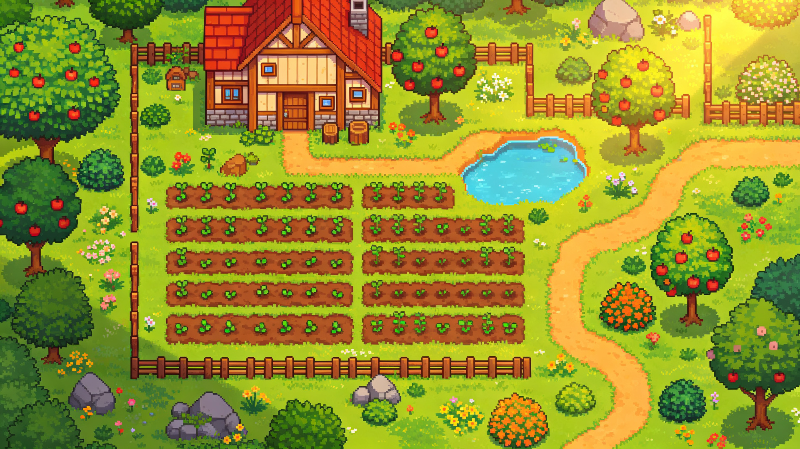

以《星露谷物语》式农场为例 · 从空白工程到把地图导出进游戏引擎 · 基于 Tiled 1.12 官方手册
Tiled 本身不画美术素材，它做的事是：把你找来的像素瓦片"拼"成地图，并在地图上标注游戏逻辑数据（哪里能走、哪里传送、哪里刷采集物）。所以做一张种田地图，本质是回答三个问题——
建立 Project 工程，把瓦片图切成 Tileset 图块集，给瓦片配好碰撞、动画和地形过渡。
新建正交地图，按"从地面到前景"的图层顺序，用图章刷和地形刷铺出农场。
用对象 + 自定义属性标记出生点、传送门、可耕地、采集刷新点，再导出给引擎读取。
Tiled 的全部工作都围绕这四个文件展开，星露谷那种"农场→小镇→森林"的大地图也是靠它们组织的。
关系一句话：项目管素材，图块集被所有地图共享，地图引用图块集来拼场景，世界把多张地图摆在一起。图块集务必"另存为外部 .tsx"，不要内嵌进地图——这样改一次碰撞，所有地图同步生效。
每一步右侧标注了对应的 Tiled 工具与快捷键，照着做一遍即可跑通全流程。
Project → New Project，新建 .tiled-project 并把素材目录加进去。建议目录：maps/（地图）、tilesets/（图块集）、templates/（对象模板）、images/（原图）、rules/（自动映射规则）。
New Tileset 导入素材图集，填瓦片尺寸（种田游戏常用 16×16）和边距/间距；然后给树、石头、水面、建筑画碰撞形状，给水面和作物做逐帧动画，给草地/泥土/水岸配置地形集。最后 Save As 成外部 .tsx。
File → New → New Map：星露谷式俯视选 Orthogonal（正交），Tile Size 填与素材一致的 16×16，渲染顺序 Right Down。地图大小没把握就选 Infinite（无限画布），画完再转固定尺寸。
先建图层组并命名（见下一节），再按"水面 → 草地/泥土 → 道路 → 耕地"的顺序铺底。大面积底色用油漆桶，草地与水岸、田埂的过渡用地形刷自动拼接，别一块块手挑过渡瓦片。
树、石头、建筑这类不严格对齐格子或需要碰撞的东西，用瓦片对象放在对象层；花、草等地面小装饰开随机模式混刷，并在图块集里调每块瓦片的 Probability 概率，避免重复感。重复物件（树、宝箱）存成模板反复拖用。
新建逻辑对象层：点对象标玩家出生点和采集物刷新点，矩形标传送门并写目标地图/坐标，多边形补不规则碰撞。配合项目里定义的枚举（季节）和类（作物数据），把"硬编码坐标"全部搬进地图。
农场、小镇、森林各存一张地图，用 World Tool 摆好相邻位置并在边界放传送对象；File → Export 导出为 JSON（.tmj，引擎最通用）或 Lua。建议第一张测试小图就先导进引擎跑通读取，确认图层、对象、属性、碰撞都能拿到，再量产。
图层顺序决定渲染顺序：下面的先画，上面的后画并盖住下面。左图是自后向前的叠加剖面，右图是每层要放的东西。
全部是 Object 对象层，游戏运行时不渲染，只供代码读取：
Collisions 补充碰撞多边形 · Warps 地图传送门 · Spawn 玩家/怪物出生点 · ForageSpawn 采集物刷新点 · NPC 村民站位与路径。用 Group Layer 把 Environment / Farm / Structures / Logic 分组，图层多了也不乱。
地图只是"引用"瓦片，瓦片的碰撞、动画、过渡信息全部配置在图块集里，且被所有地图共享。
一张 PNG 精灵表按固定宽高自动切割，需填写 Tile Size、Margin（四周边距）、Spacing（瓦片间隙）。适合统一 16×16 的瓦片包。
每块瓦片引用独立图片文件，允许尺寸不一、后期再打包图集。适合零散收集的家具、道具图标。
选中瓦片打开 Tile Collision Editor，画矩形/多边形：树干、岩石、建筑、深水都要画。View 菜单可开启"显示碰撞形状"随时核对。
在图块编辑器里把多块瓦片拖成动画帧：水面波光、瀑布、篝火、作物摇摆。每帧时长可调，游戏里循环播放。
Probability 控制随机刷出权重（稀有花朵调小）；Class 给瓦片挂自定义类，瓦片对象会继承，批量同类物件时省大量配置。
目录建议：图块集按主题拆成 terrain.tsx（地形/水/道路）、farm.tsx（耕地/作物/农具）、nature.tsx（树/石/花）、buildings.tsx（房屋/家具），每张地图只引用需要的几个，控制内存。
在图块集编辑器里定义 Terrain Set 并给瓦片标注角/边类型后，地形刷能看懂周围环境，自动选对过渡瓦片，手绘一天的岸线几分钟刷完。
按四个角匹配，适合斑块状地形：草地中的泥地、沙地与草地的圆角、浅水滩涂。
按四条边匹配，适合线性元素：土路、木栅栏、田埂、河岸、平台边缘。
角与边同时匹配，过渡最自然但瓦片量大；新手直接找带 Blob/terrain 元数据的现成素材包即可。
用法：地形刷 T 直接刷过渡；图章刷 B 和油漆桶 F 工具栏上也有"Terrain Fill Mode"，可整片填充并随机变化；按住 Ctrl 用地形刷会把编辑范围扩大到整格。地形集最多支持 254 种地形，足够区分草地、泥土、沙滩、浅水、深水。
这是 Tiled 相对手画地图最大的价值——出生点、传送、刷新、碰撞全部数据化，代码读取即可，绝不在脚本里硬编码坐标。
| 游戏里的需求 | Tiled 里的做法 | 工具 | 自定义属性示例 |
|---|---|---|---|
| 玩家出生点 | Point 点对象放在 Spawn 层，Class 设为 Spawn | I | id:string（如 FarmBed） |
| 场景传送门 农场↔小镇 | Rectangle 矩形盖在小路出口处，Class=Warp，两边地图各放一个互指 | R | targetMap:stringtargetX:inttargetY:int |
| 不可通行碰撞 | 树/石/水等静态瓦片在图块集里画碰撞；不规则区域在 Collision 对象层补多边形 | 碰撞编辑器 / P | —（形状本身即数据） |
| 可耕种地块 | 单建一个 Tillable 瓦片层，把允许开垦的格子刷出来，代码只认这一层；或给瓦片加布尔属性 | 瓦片层 | tillable:bool = true |
| 作物实例 | 瓦片对象放置、存成 Crop 模板反复实例化，Class=Crop | T V | cropId:stringstage:intwatered:bool |
| 采集物刷新点 野葱/浆果/木头 | Point 点对象散布在野外，Class=ForageSpawn，按季节与权重刷物品 | I | lootTable:stringseason:SeasonrespawnDays:int |
| 村民 NPC | 瓦片对象 + NPC 模板，站位标在地图上；日程表可用 file 属性挂外部表 | T V | npcId:stringschedule:file |
| 钓鱼点 | Ellipse 椭圆圈出可抛竿水面，Class=FishingZone | C | fishTable:string |
| 宝箱 / 出货箱 | 瓦片对象 + 模板，Class=Chest；多边形/折线还可画 NPC 巡逻路线 | T / 折线 | loot:stringoneShot:bool |
在 Project 的 Custom Types Editor 里定义 Season = Spring / Summer / Fall / Winter，属性变成下拉框，杜绝 "spirng" 这类拼写错误；可存为字符串或数字索引。
一次挂一组带默认值的属性，例如 CropData { cropId, growthDays, season, regrow }；对象、瓦片、图层、地图都能挂，类还能嵌套引用其他类。
bool / int / float / string / color / file（相对路径）/ object（引用另一个对象，可做"开关→门"的联动关系）。注意：自定义类型保存在项目文件中，必须先建项目。
大世界拆成多张地图：省内存、多人协作不冲突。.world 文件用像素坐标记录每张地图的位置，可在同一视图里整体浏览、点击切换。
// farm.world（JSON 片段） { "maps": [ { "fileName": "farm.tmx", "x": 0, "y": 0 }, { "fileName": "town.tmx", "x": 1280, "y": 0 }, { "fileName": "forest.tmx","x": 0, "y": 1280 } ], "type": "world" }
先记住 B / T / F / E 四个绘制键和对象五件套，其余随用随查；macOS 把 Ctrl 换成 Command。
| 瓦片层绘制 | |
|---|---|
| B | 图章刷：铺瓦片主力，右键可吸取瓦片组合 |
| T | 地形刷：自动拼接草地/水岸/道路过渡 |
| F / P | 油漆桶整片填充 / 形状（矩形圆形）填充 |
| E | 橡皮 |
| D | 随机模式开关：混刷花草，消除重复感 |
| Shift+点击 | 两点之间拉直线（修田垄、铺路神器） |
| Ctrl+Shift+点击 | 以第一点为圆心画圆/椭圆（小岛、池塘） |
| X/Y/Z | 当前图章水平翻转 / 垂直翻转 / 顺时针旋转 |
| Ctrl+1~9 / 1~9 | 暂存常用图章组合 / 一键取出 |
| 对象与通用操作 | |
|---|---|
| S | 选择/移动对象 |
| R/I/C | 矩形（传送门）/ 点（出生点）/ 椭圆（钓鱼点） |
| P | 多边形/折线（不规则碰撞、巡逻路径） |
| T / V | 放置瓦片对象（树/房子）/ 放置模板实例 |
| Ctrl+D | 复制选中对象（摆栅栏、摆树很快） |
| Ctrl+M | 执行 Automapping 自动映射 |
| Ctrl+P | 在项目文件夹中快速搜文件 |
| H / Ctrl+G | 高亮当前层（防画错层）/ 开关网格 |
| Ctrl+PgUp/PgDn | 快速切换上/下一个图层 |
配好 Class 和属性的树、宝箱、传送门、NPC，右键"Save As Template"存成文件，之后拖放实例化；改模板，所有实例同步更新。
在规则地图里画 input_* / output_* 层："见到这种格子就自动补上对应瓦片"，可开 AutoMap While Drawing 边画边生成悬崖、围栏、装饰。规则在 rules.txt 登记，可按地图文件名过滤。
图层 Tint Color 做乘法染色：同一套绿色植被染出春夏秋冬与黄昏；Parallax Factor 小于 1 让远山移动变慢，0 则固定不动（可放 UI 参考框）。
新建时选 Infinite，画布随画笔自动增长，不用一开始就纠结尺寸；定稿后在地图属性里转 Fixed，Tiled 按已画内容自动算宽高。
图层多了用 Group Layer 当文件夹；画完的层立刻锁定（眼睛/锁图标），配合 H 高亮当前层，杜绝"画了半天发现画错层"。
Tiled 内置 JavaScript 引擎，可写扩展批量改属性、批量导出、自定义工具；也支持命令行 tiled --export-map 无人值守批量导出。
File → Export（Ctrl+E）。很多框架能直接读 TMX/TMJ，也可以导出成引擎偏好的格式；第一次导出后再导出不会重复问文件名。
| 格式 | 适用 | 说明 |
|---|---|---|
| JSON（.tmj/.tsj） | Godot / Unity / 自研，最通用 | 结构与 TMX 等价但最好解析，新手首选；布尔与数字不会被加引号 |
| Lua（.lua） | LÖVE 2D、Corona 等 Lua 框架 | 导出即可被 Lua 直接 require 使用 |
| CSV | 只需要瓦片 ID 数组时 | 仅瓦片层数据，对象和属性需另选格式 |
| Godot 4 | Godot 引擎 | Tiled 内置 Godot 4 导出器，图层/图块/对象/属性均有映射规则 |
| 导出为图片 | 宣传图、策划评审、底图参考 | 整张地图渲染成 PNG，不用于游戏运行 |
先做一张 20×15 的测试小图，在引擎里跑通完整读取链路，再正式量产。
测试链路要验证五件事：瓦片层渲染、对象层坐标、自定义属性值、图块碰撞形状、动画瓦片。五件事都通了，再铺农场不返工。批量导出可用 tiled --export-map json *.tmj 命令行自动化。
不用等"素材画好"再开始——Tiled 是拼地图的工具，先用现成免费瓦片包把流程跑通，之后换自己的美术即可。
安装免费开源的 Tiled；在 itch.io 搜 "free farming/farm tileset"（如 Sprout Lands 包）下载 16×16 素材；新建项目并建好 maps / tilesets / templates 目录。
导入图集切割，给树石水画碰撞、给水面做动画、配好草地/泥土/水岸地形集，另存为外部 .tsx；新建一张 30×20 测试图随便刷。
按九层结构铺地表、池塘、道路、耕地，摆树和农舍，放 Spawn/Warp/ForageSpawn 对象，导出 .tmj。
在引擎里跑通五件事的读取；拆出小镇/森林等地图并用 World 拼接；常用物件转模板、重复劳动交给 Automapping，逐步扩成整张世界。